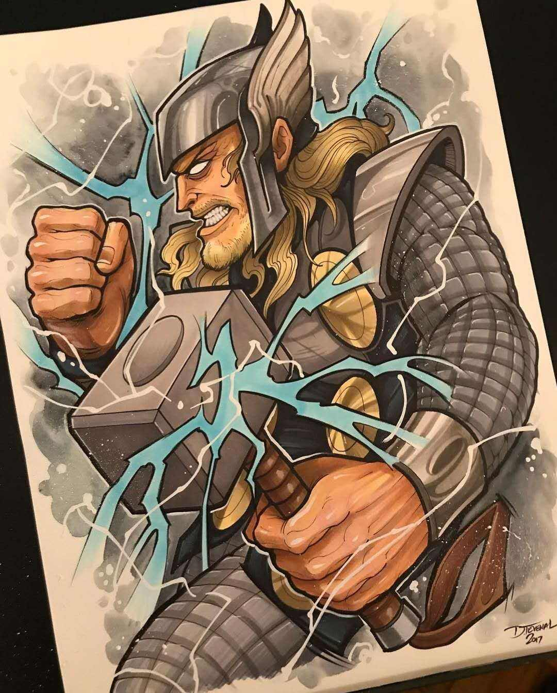
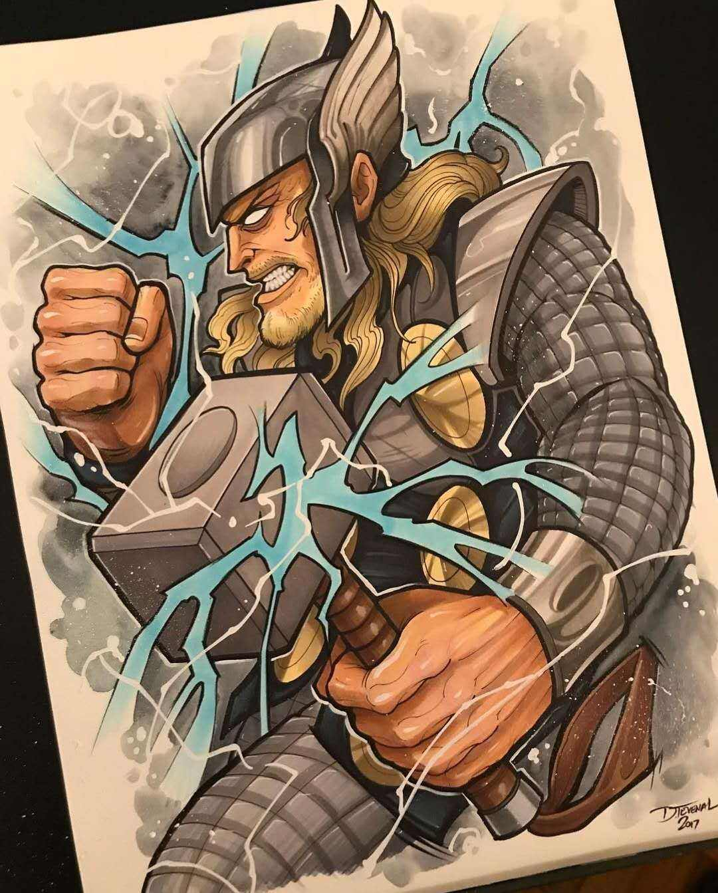

THE AVENGERS
THE WOLVERINE

CAPTAIN AMERICA
THOR
IRON MAN
Name：Howlett Date:1832
路上只我一个人，背着手踱着。这一片天地好像是我的；我也像超出了平常旳自己，到了另一世界里。我爱热闹，也爱冷静；爱群居，也爱独处。像今晚上，一个人在这苍茫旳月下，什么都可以想，什么都可以不想，便觉是个自由的人。白天里一定要做的事，一定要说的话，现在都可不理。这是独处的妙处，我且受用这无边的荷香月色好了。
曲曲折折的荷塘上面，弥望的是田田的叶子。叶子出水很高，像亭亭旳舞女旳裙。层层的叶子中间，零星地点缀着些白花，有袅娜地开着旳，有羞涩地打着朵儿旳；正如一粒粒的明珠，又如碧天里的星星，又如刚出浴的美人。微风过处，送来缕缕清香，仿佛远处高楼上渺茫的歌声似的。这时候叶子与花也有一丝的颤动，像闪电般，霎时传过荷塘的那边去了。叶子本是肩并肩密密地挨着，这便宛然有了一道凝碧的波痕。叶子底下是脉脉的流水，遮住了，不能见一些颜色；而叶子却更见风致了。
月光如流水一般，静静地泻在这一片叶子和花上。薄薄的青雾浮起在荷塘里。叶子和花仿佛在牛乳中洗过一样；又像笼着轻纱的梦。虽然是满月，天上却有一层淡淡的云，所以不能朗照；但我以为这恰是到了好处——酣眠固不可少，小睡也别有风味的。月光是隔了树照过来的，高处丛生的灌木，落下参差的斑驳的黑影，峭楞楞如鬼一般；弯弯的杨柳的稀疏的倩影，却又像是画在荷叶上。塘中的月色并不均匀；但光与影有着和谐的旋律，如梵婀玲上奏着的名曲。
荷塘的四面，远远近近，高高低低都是树，而杨柳最多。这些树将一片荷塘重重围住；只在小路一旁，漏着几段空隙，像是特为月光留下的。树色一例是阴阴的，乍看像一团烟雾；但杨柳的丰姿，便在烟雾里也辨得出。树梢上隐隐约约的是一带远山，只有些大意罢了。树缝里也漏着一两点路灯光，没精打采的，是渴睡人的眼。这时候最热闹的，要数树上的蝉声与水里的蛙声；但热闹是他们的，我什么也没有。
Name：Howlett Date:1832
忽然想起采莲的事情来了。采莲是江南的旧俗，似乎很早就有，而六朝时为盛；从诗歌里可以约略知道。采莲的是少年的女子，她们是荡着小船，唱着艳歌去的。采莲人不用说很多，还有看采莲的人。那是一个热闹的季节，也是一个风流的季节。梁元帝《采莲赋》里说得好：
于是妖童媛女，荡舟心许；鷁首徐回，兼传羽杯；欋将移而藻挂，船欲动而萍开。尔其纤腰束素，迁延顾步；夏始春余，叶嫩花初，恐沾裳而浅笑，畏倾船而敛裾。
可见当时嬉游的光景了。这真是有趣的事，可惜我们现在早已无福消受了。于是又记起《西洲曲》里的句子:采莲南塘秋，莲花过人头；低头弄莲子，莲子清如水。今晚若有采莲人，这儿的莲花也算得“过人头”了；只不见一些流水的影子，是不行的。这令我到底惦着江南了。——这样想着，猛一抬头，不觉已是自己的门前；轻轻地推门进去，什么声息也没有，妻已睡熟好久了。
THE WOLVERINE
CAPTAIN AMERICA
THOR
IRON MAN
Name：Howlett Date:1832
| 姓名 | 年龄 | 性别 |
|---|---|---|
| xge | 19 | 女 |
| cy | 19 | 男 |
| xl | 3 | ? |